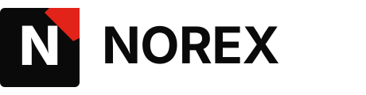
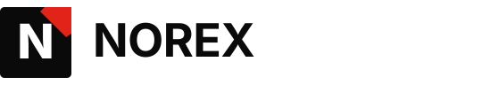
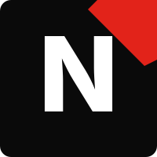

Wir bringen Handwerks- und Reinigungsbetriebe auf Google — und beantworten jede Anfrage automatisch. Die einzige Komplettkette aus einer Hand für Handwerk und Reinigung in Deutschland.
+50% mehr Anrufe in 90 Tagen
Verifikation dass das Logo in allen Größen funktional bleibt — von 16px Favicon bis 200px Hero-Logo.

Primary Lockup, 80px Höhe
Horizontal Lockup (Briefkopf-Variante)
Square (Social-Avatar)
Mono White auf dunkler BGSection-Headline H2 — kantig und präzise
Wir bringen Ihren Handwerksbetrieb auf Google — und beantworten jede Anfrage automatisch. Für Berlin und Brandenburg. Garantie: messbar mehr in 90 Tagen — oder erster Monat kostenlos. „Sprachstil" mit deutschen Anführungszeichen, Umlaute (ä ö ü ß), €-Symbol getestet. Sehr gute Lesbarkeit auch in längeren Reading-Passages für 35-60 Zielgruppe.
Primary #0A0A0A Secondary #FFFFFF Accent #E2231A (BVG-Rot) BG-Soft #F8F7F4
Success #1F7A4F Warning #C77B22 Error #B94B3A Info #3F6FB8
| Foreground / Background | Ratio | WCAG |
|---|---|---|
| Primary auf Weiß | 20.4:1 | ✓✓✓ AAA |
| Ink-500 auf BG-Soft | 11.2:1 | ✓✓✓ AAA |
| Weiß auf Primary | 20.4:1 | ✓✓✓ AAA |
| CTA-Pattern | 3.6:1 | ✓ AA Large only (18px+ Bold) |
Diese Test-Page validiert die Norex Brand-Foundation. Alle visuellen Elemente sollten korrekt rendern: Logo in allen Größen lesbar, Geist Display und Manrope Body geladen, Umlaute + €-Symbol sauber, AAA-Kontrast auf Body-Text, CTAs mit Hover-Animation.
✓ Status: Brand-Foundation komplett. Bereit für Page-Build (Plan 2).